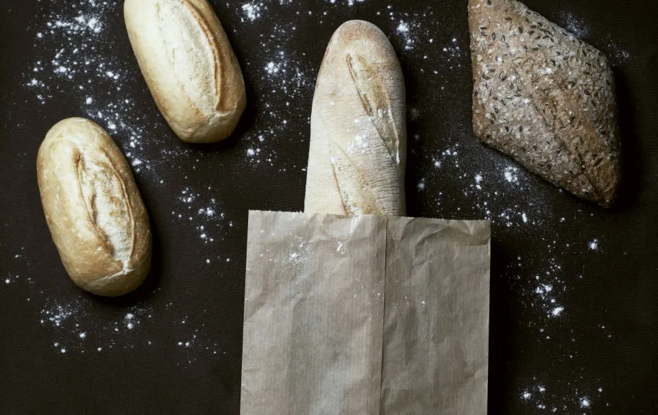
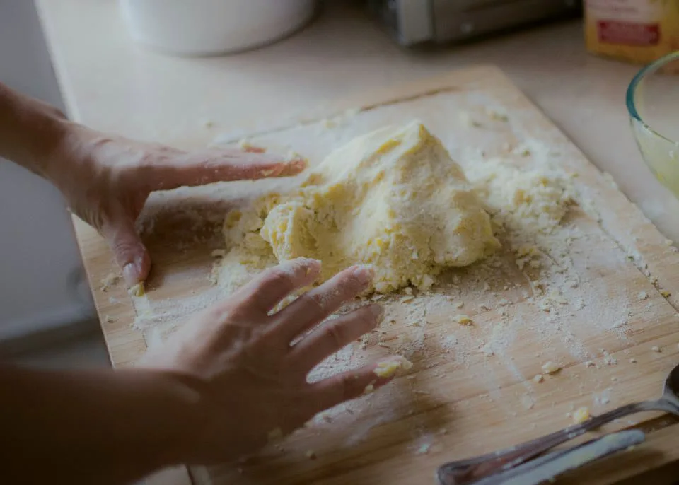
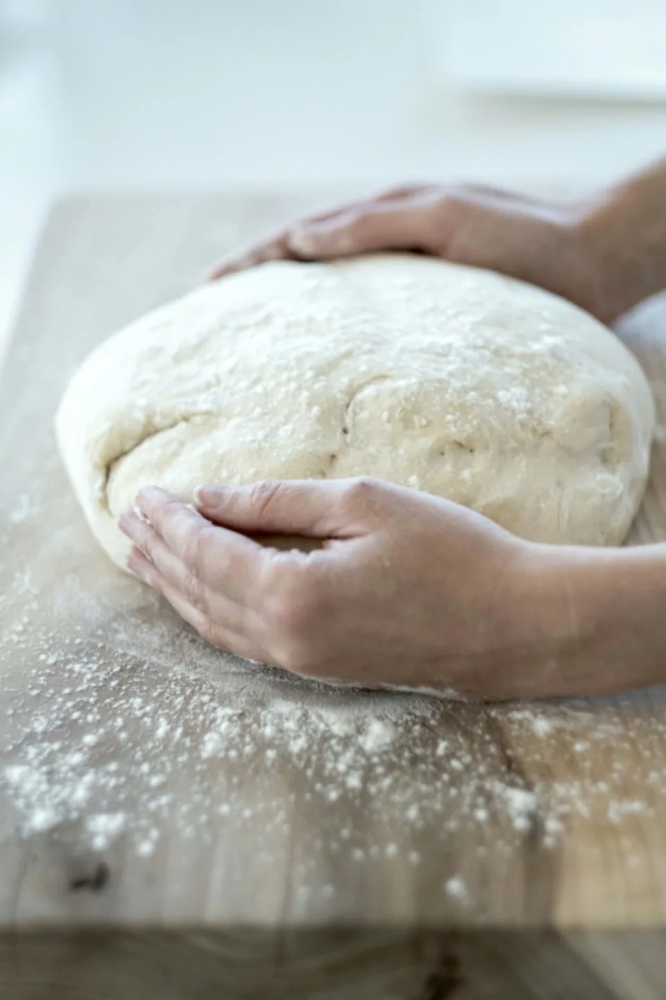
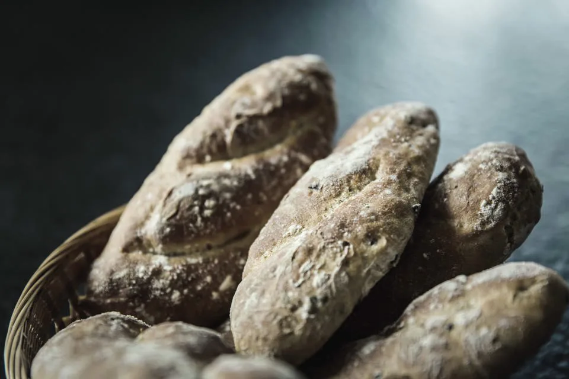
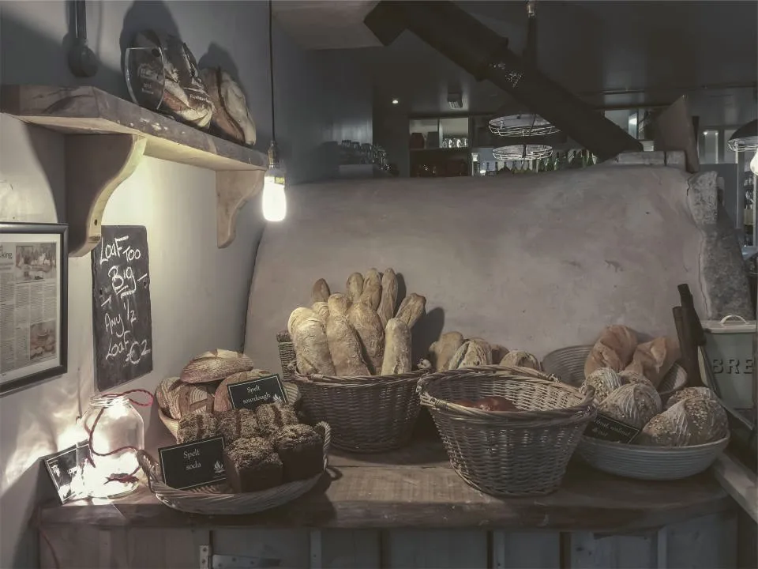
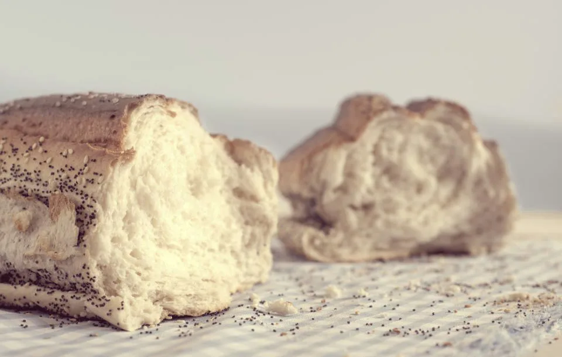
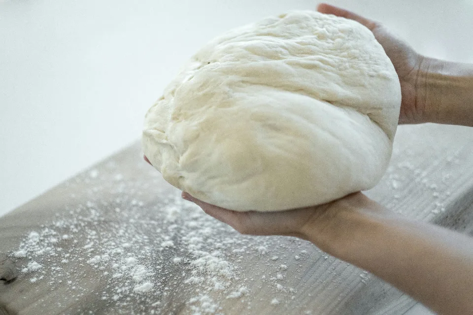
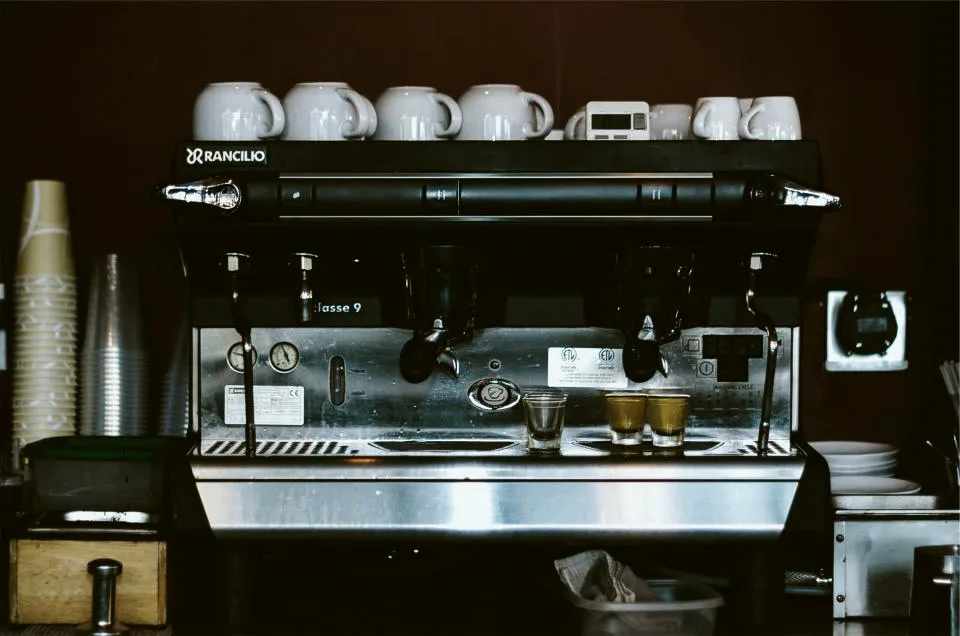

Pão do forno
da São José,
na sua rua.
Padaria em cidade e bairro a confirmar. Pão francês, café passado e o que sai do forno em cada fornada.
Tem coisa que não cabe em foto: o saco de papel ainda quente na mão, o cheiro que chega na calçada antes da porta, o bom dia de quem já sabe o seu pedido. Este site é o caminho até o balcão da São José.

Foto de banco, só para a prévia. Entra a foto do pão de vocês.
No balcão
O que tem todo dia e o que sai em fornada. lista a confirmar
- Pão francêsCasca fina, miolo leve, direto do forno para o saco.
- Pães doces e de formaPara o café da manhã e o lanche da tarde.
- Bolos e docesNa vitrine e por encomenda.
- SalgadosAssados e fritos, para comer no balcão ou levar.
- Café e lanchesPingado, média, misto quente e pão na chapa.
- Frios e merceariaO que falta em casa, sem ir ao mercado.
A fornada
Do saco de farinha ao saco de papel. É assim que o pão francês fica pronto. horários a confirmar
- Primeiro, a massa
Farinha, água, sal e fermento
A massa é sovada até ficar lisa e elástica. É o começo de toda fornada, antes de a porta abrir.

- Depois, o descanso
A massa cresce e ganha forma
Dividida e enrolada, ela descansa até dobrar de tamanho. Cada pão é modelado um a um.

- Então, o forno
Um corte e muito calor
O corte na superfície abre no forno e vira a pestana. O vapor deixa a casca fina e crocante.

- Por fim, o balcão
Do cesto para o saco de papel
O pão sai quente e vai direto para a vitrine. Os horários das fornadas aparecem aqui. a confirmar


A casca estala.
O miolo é macio.

Café da manhã da firma, bolo do aniversário, salgado da reunião.
Encomendas pelo WhatsApp, com antecedência. Conte o que precisa, para quantas pessoas e o dia da retirada. a confirmar
Pedir pelo WhatsApp
O café
do balcão
Pingado, média, expresso. Pão na chapa, misto quente e o pão de queijo da vitrine. Para tomar em pé, conversando, ou levar no copo. cardápio a confirmar
Antes de
vir até aqui
Qual é o horário de funcionamento?
Horário de segunda a domingo a confirmar
Que horas sai pão quente?
Os horários das fornadas do dia entram aqui. a confirmar
Vocês aceitam encomendas?
Como pedir, com quanto tempo de antecedência e se há retirada ou entrega. a confirmar
Tem entrega ou aplicativo?
Se a padaria entrega e por qual canal. a confirmar
Venha pelo
cheiro de pão.
- Endereço
- a confirmar
- Horário
- a confirmar
- Contato
- WhatsApp a confirmar
- Instagram a confirmar